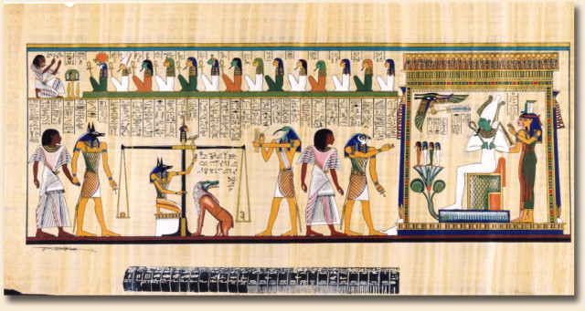
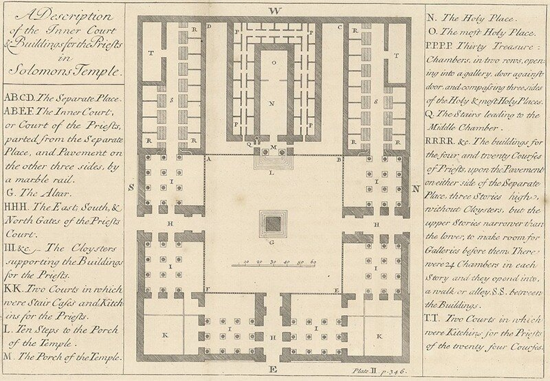

Да и ночка же выдалась! Египетская тьма, прости Господи!
Потапенко. Очерки и рассказы
В отличие от предыдущих единиц, которые мы рассмотрели – туаз и фут – рассказ о самой известной единице длины – локте – начнем с самой глубокой древности. (Наша попытка ограничить описание некоторым отрезком времени, которую мы предприняли при рассмотрении истории фута, по всей видимости, провалилась. Поэтому сделаем из этого провала правильные выводы).
Локоть, пожалуй, был самой распространенной мерой длины во всех цивилизациях. Его значения, естественно, отличались как различались размеры «живых» локтей и правила, предписывающие «откуда и докуда» мерить. Требовались некие эталоны «локтя» и такие эталоны были изобретены. Наиболее знаменитыми являлись египетский «Царский локоть» и так называемый «Священный локоть иудеев», упоминание о котором встречается в Библии.
«Царский локоть» египтян равнялся «длине предплечья от сгиба локтя до конца вытянутого среднего пальца руки плюс ширина ладони руки фараона». Эталон «Царского локтя» хранился в главном храме страны и находился под неусыпным наблюдением жрецов. Изготавливался он, как правило, из полированного черного гранита, и тщательно разделялся на меньшие меры, как это показано на египетском папирусе.
 |
| (кликабельно) |
За точность воспроизведения эталонного локтя в рабочих измерительных инструментах, которыми пользовались, например, строители пирамид, отвечал Главный архитектор фараона, который обязан был каждое полнолуние возвращать рабочие эталоны локтя в храм, где проводилась их поверка – тщательное сравнение с эталоном «Царского локтя». Неисполнение этого требования каралось смертной казнью. Именно подобной строгостью объясняется тот факт, что каменные блоки из различных каменоломен, поставляемые для строительства пирамиды, без дополнительной обработки вставали на отведенное им место. Точность работы поражает. Погрешность на расстоянии около 230,5 м (длина основания пирамиды) составляла только 11,4 см, т.е. около 0,05%. Футляр от «Царского локтя» был обнаружен Говардом Картером в гробнице Тутанхамона в 1923 году, однако сам эталон был, видимо, похищен еще в древние времена, так как он представлял значительную ценность.
Широта использования локтя как меры длины может сравниться только с объемом публикаций, посвященных этой единице. И среди наиболее замечательных авторов этих работ – сэр Исаак Ньютон. Известны по меньшей мере три работы великого ученого, посвященные локтю. Все они входят в цикл его теологических исследований. (Есть неплохая статья, посвященная этой области творчества Ньютона: И.С. Дмитриев «Религиозные искания Исаака Ньютона», “Вопросы философии” №6 (1991).)
Я не буду скрупулезно точен в воспроизведении теологических взглядов сэра Исаака, но смысл постараюсь передать. На протяжении всех последних лет своей жизни, начиная с середины 1680-х, Ньютон занимался поисками древнейшей «истинной религии». Известные нам языческие религии не были самыми древними. Ньютон считал, что хотя древние и связывали образ божества со своими царями и героями, поклонялись они двенадцати главным богам (семь планет, четыре элемента и квинтэссенция), которые были ничем иным, как обожествлением предков людей, а именно Ноя, его сыновей (Хама, Сима и Иафета) и внуков, от которых и возникло все человечество. И лишь Ной и его сыновья поклонялись истинному Богу, творцу универсума (Вселенной). Все последующие религии появились «в результате “искажения первоначального естественного и чистого поклонения единому Богу”, искажения, которое возникло в процессе распространения истинной веры сначала среди евреев через Авраама, Исаака, Иакова, Моисея, а затем и среди других народов, через Пифагора, Конфуция, Сократа и Цицерона» (И.С.Дмитриев). Самую древнюю религию Ньютон связывал с культом богини Весты. Этот культ действительно восходит к древнейшим индоевропейским традициям. В центре храма Весты постоянно горел огонь, в чем Ньютон усматривал символ гелиоцентрической системы мира. И когда Моисей установил в скинии огонь, он этим возродил изначальный культ, “очищенный от внесенных египтянами предрассудков”.
Почему мы предприняли такое длинное теологическое отступление? А для того, чтобы понять, почему Ньютон пришел к мысли о том, что богу должны были поклонятся в храме, имитирующем Природу, являющемся уменьшенной копией мироздания. Святилище с огнем в центре – это эмблема системы мира, и потому “первая религия была самой рациональной из всех до того, как народы исказили ее. Ибо нет иного способа (не считая откровения) познания Божества, кроме как путем (познания) природы».
Тема храма Бога как отражения Природы нашла свое развитие в работах Ньютона, в которых он обращается к плану и пропорциям храма Соломона. Согласно Ветхому Завету, царь Соломон на четвертый год своего царствования начал “строить храм Господу” (3 Цар., 6:1) в Иерусалиме. В святая святых (давире) храма стоял “ковчег завета Господня” (3 Цар., 6:19). Храм служил жилищем Яхве и местом жертвоприношения. Ньютон много сил и времени потратил на изучение этого храма и иудейского богослужения, он читает Филона Александрийского, Маймонида, талмудистов, есть данные, что он даже начал изучать древнееврейский язык.
Естественно, при воссоздании пропорций храма возник вопрос о длине “священного локтя евреев”. Ньютон, по-видимому, считал, что найдя его длину он сможет прийти к познанию основных пропорций Земного шара и всей Вселенной. Однако ни тщательный анализ Третьей книги Царства и Книги Пророка Иезекииля, ни сопоставления соответствующих фрагментов древнееврейских текстов с Септуагинтой (самым старым известным переводом Библии на греческий язык) и Вульгатой (переводом на латинский) не дали определенного результата. И тогда сэр Исаак решил обратиться к поиску ускользающей истины в соотнесении пропорций других памятников прошлого, в частности египетской пирамиды. По результатам этой работы он написал трактат, который был издан в 1737 году под названием:
«A DISSERTATION upon the Sacred Cubit of the Jews and the Cubits of the several Nations; in which, from the Dimensions of the greatest Egyptian Pyramid, as taken by Mr. John Greaves, the antient Cubit of Memphis is determined. Translated from the Latin of Sir Isaac Newton, not yet published.»
Перевод этого названия на русский язык: «Трактат о священном локте иудеев и локтях у различных народов, в котором из размеров Великой египетской пирамиды, полученных мистером Джоном Гривсом, выведен локоть Мемфиса. Переведено с латинского текста сэра Исаака Ньютона, пока еще не опубликованного».
Я люблю читать названия старых трактатов. Они содержат в себе, как правило, и аннотацию, и оценку приведенного в работе материала. Но все равно требуются некоторые пояснения.
В 1638 году Джон Гривс, 36-летний математик и астроном, окончивший Оксфорд и преподававший геометрию в Лондоне, решил отправиться в Египет. Он надеялся найти в пирамиде документы, которые помогли бы исчислить размеры Земли. При этом он опирался на рассуждения Джироламо Кардано, миланского физика и математика, который утверждал, что абсолютно точные научные знания существовали еще до греков. Кардано предположил, что градус дуги (гораздо более точный, чем у писавших о нем Эратосфена, Птолемея или Аль-Мамуна) был известен за сотни или даже тысячи лет до эллинистической культуры Александрии и искать его следует в Древнем Египте. Согласно преданию, Пифагор утверждал, будто древние меры берут начало в Египте, а египтяне взяли их из природных констант. Пирамида якобы была построена с целью зафиксировать размеры Земли. Пифагору можно было доверять, ведь он прожил более 20 лет в Египте и проник в премудрости и тайны жрецов.
До этого Гривс уже побывал в Италии и измерил древние здания и статуи в попытке установить стандарт мер, использованных римлянами, — он сделал вывод, что единицей измерения был фут, который короче британского на 0,028 этой линейной меры (Гривс обнаружил, что римский фут содержал 1944 из 2000 частей, на которые он разделил английский фут). Следующей задачей Гривса было выявить единицу измерения, в соответствии с которой построена пирамида — будь то длина ступни, шага, локтя или ладони. У Гривса был специальный мерный шест, длиной 10 стандартных английских футов, разделенный на 10 000 равных частей. Все свои наблюдения и расчеты он скрупулезно описал в труде под названием «Пирамидография».
Перед отъездом в Англию Гривс оставил свои инструменты, включая десятифутовый шест, юному венецианцу, которого повстречал в Египте и который сопровождал его в путешествиях к пирамиде, Тито Ливио Бураттини, жаждущему не меньше Гривса определить не только точные размеры пирамиды, но и единицу измерения, в соответствии с которой она строилась. Бураттини провел четыре года в Египте, тщательно выполняя замеры с помощью инструментов Гривса. Он послал отчет о своей работе отцу Кирхеру из Кракова, финансирующему предприятие, что было необыкновенной удачей для науки: на обратном пути через Балканы в Польшу на Бураттини напали разбойники, которые отобрали у него не только деньги, но и все записи, которые он намеревался опубликовать. Уцелели лишь те сведения, которые он отослал в письме отцу Кирхеру.
Вернемся к Исааку Ньютону. Из записок Гривса он вывел, что Великая пирамида была построена на основе двух различных локтей, один из которых он назвал «мирским», а другой «священным». В соответствии с замерами Усыпальницы царя, сделанными Гривсом и Бураттини, Ньютон вычислил, что локоть длиной 20,63 британского дюйма позволяет установить точные размеры помещения. Этот локоть Ньютон назвал «мирским», или локтем Мемфиса; более длинный локоть равнялся приблизительно 25 британским дюймам.
Протяженность более длинного «священного» локтя Ньютон вывел из описания окружности колонн храма в Иерусалиме иудейского историка Иосифа Флавия. Ньютон считал, что этот локоть должен равняться 24,8 — 25,02 английского дюйма, и полагал, что цифру можно уточнить путем дальнейших измерений Великой пирамиды и других древних строений.
Особое внимание Ньютон уделял размерам храма Соломона. Имеется построенный им чертеж этого храма.

«Вычислив длину древнеегипетского локтя, Ньютон надеялся рассчитать точную величину стадия египтян, который, согласно трудам классических авторов, имел отношение к географическому градусу, и он полагал, что эта величина каким-то образом увековечена в пропорциях Великой пирамиды» (В.Самойлов «Древние истоки». )
К сожалению, замеры основания пирамиды, выполненные Гривсом и Бураттини, были неточны из-за огромных завалов камней, и хотя вычисления Ньютона очень близки к реальности, неточность измерений помешала ему найти ответ, который он искал.
Продолжение последует.